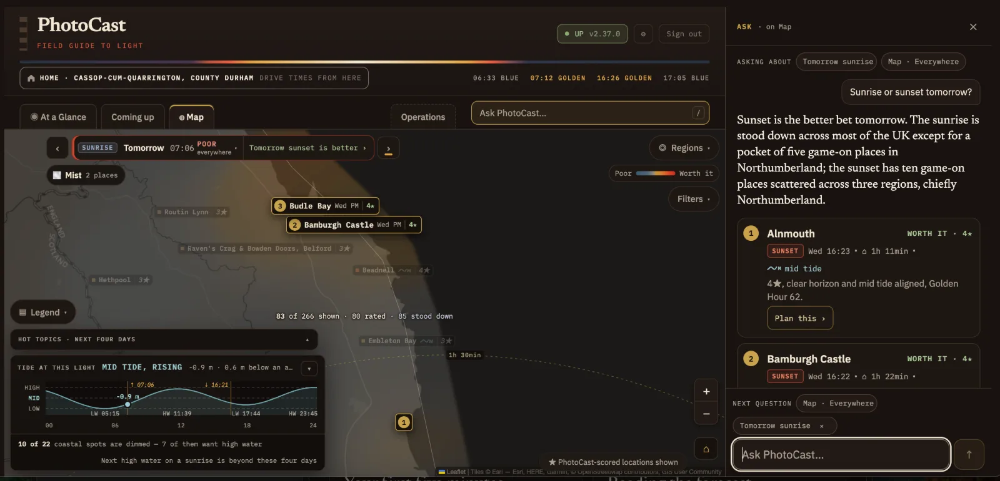

Ask PhotoCastPro
Ask PhotoCast lets you ask about the forecast in everyday language and get an answer drawn from PhotoCast's own forecasts, with the locations shown on the map.
ProAsk PhotoCast is available with Pro. On Lite you'll see where it lives, with a short preview of what it does.
Opening Ask
- On a computer, type into Ask PhotoCast… beside the tabs, or press / to jump straight to it. The answer opens as a column on the right. The map or At a Glance narrows to make room, so you can read the answer and see the locations at the same time.
- On a phone or iPad, tap Ask PhotoCast… at the bottom of the screen and the answer opens in a panel.
Ask knows where you are in the app. The Asking about labels at the top show which forecast and map area your question refers to. A sunrise or sunset label, such as Tomorrow sunrise, can be removed with ✕. A view label, such as Map · Everywhere, cannot be removed. Once you have asked something, a follow-up · N so far label shows how long the conversation is.

Ready questions
Ask suggests a few questions that suit the tab you're on, such as "Best spot this weekend?" or "Somewhere within an hour of home?". Ready answers are prepared in advance and do not count towards your daily question allowance.
Your own questions
Type anything about the forecast. Pro readers have 30 typed questions each day. Ask shows how many are left, for example 30 of 30 left today, and the count resets daily.
Good questions are about where, when and why:
- Sunrise or sunset on Saturday?
- Best coastal location at high tide?
- Why does Steel Rigg have a four-star sunrise?
- Any rare events coming up?
Answers and picks
An answer starts with a short summary, followed by two or three numbered picks, which are recommended locations and times. Each pick names a location and a time, with its verdict and stars, the drive from home, the tide where it matters, and one line on why.
- The same numbers appear on the map. Tap a pick and the map moves to that location and switches to that sunrise or sunset.
- Plan this › gives that pick's leave time, drive time, best light and tide in one place.
- Show on map › opens it on the Map tab.
- For night questions, a pick shows the sky rating, the aurora rating where there is one, and how dark the sky is. More on night questions.
Following up
Ask remembers the conversation, so you can follow up with "What about Sunday?" or "Anything closer?". Earlier questions stay above the latest answer. The Next question labels above the box show what your next question will be about. Remove one with × to ask more widely, for example about any day rather than tomorrow's sunrise. Start a new conversation when you change the subject.
What it can't answer
Ask PhotoCast uses the forecast information available in PhotoCast. It cannot provide reliable information about parking, cafés, opening times or crowds. Questions like these get a plain "not in the forecast" reply that says what's missing, with related questions you could try instead.